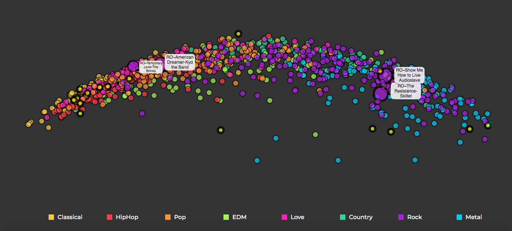

Content based Unsupervised Music Recommendation using Convolutional Variational AutoEncoder
Overview
Youtube is the most popular music consumption service in the world and till a few years ago it used to be my choice too. Over a period of time though I realized that Youtube’s recommendation system was slightly biased towards suggesting me songs that already had a large number of views on them. Eventually, when I had enjoyed all these chart topping singles my playlist would become very saturated. Every now and then, be it while watching the end credits of a movie or just strolling through a shopping mall, I would come across an engrossing song from an unknown artist and wonder why my recommendations fail to account for works of such talented yet obscure artists.
The heart of the problem lies in the fact that most major recommendation systems are based on Collaborative filtering which is inherently powered by the relationship between your listening/rating history and that of other users on the platform. This leads to the Cold Start problem where it becomes tough for newer artists to get their work featured to their intended audience while for new users the system may struggle to list suggestions given the lack of history.
One way to overcome this issue is by using Content Based Recommendations where we extract features directly from the source (in our case music) and generate suggestions based on them. In this article I detail my approach to this problem by developing an unsupervised CVAE model to automatically extract contextual features which model the intrinsic property of each song.
CURVE
I believed that the only thing my system needed to model was how similar a group of songs were to each other, with similarity being defined as to how similar they sounded (or were perceived). When I initially began, there were multiple ways to approach this problem. But I wanted to specifically develop a method which was inherently free from any bias. While content based recommendations removed bias induced by other users, there was still another aspect which had to accounted for.
It was tempting to develop a supervised method given that most work had been in that direction and it generally outperforms unsupervised methods. But assigning genre/class labels to each song would have again introduced a different form of bias into the system. In modern times due to the diversity in the types of music being produced it is hard to objectively assign a categorical value to them. For instance, my Rock may not be the same as your Rock. Songs often lie on a spectrum, where tunes conventionally defined to be in one genre may exhibit properties from a host of genres. For these reasons I decided in favor of using an unsupervised method.
Dataset
I used Spotify’s public API to download songs from a range of playlists belonging to different genres such that the dataset was well represented. I downloaded around 1100 songs in the mp3 format with each being a 30 second preview of the original. These songs were tagged with the name of the genre of the playlist from which they were extracted from. Although these tags were not used while training the model, they aided in a more intuitive understanding of the final visualisations.
The Dataset was created from Spotify Playlists like the ones above
To effectively convert this into the computer vision domain, I transformed all the audio files into their mel-spectrogram representations and used these images in training.
VAE Model
The task of this model in simple terms was to accept the spectrograms as input, compress them into an N-dimensional embedding and again recreate them as well as it could from this compressed representation. Now, for the purposes of the recommendation model, we were not interested in the reconstructed output but rather in the N-dimensional embedding/ latent vector which represented each song. The interactive graph you see on the home page are these N-dim vectors scaled down to 2 dimensions using PCA (I tried t-sne but good ol’ PCA worked the best). What these N-dim vectors model exactly is very hard for us to interpret, but these numbers arrange the songs on the graph in such a way that semantic context is preserved ie. songs which are similar to each other based on their spectrograms are placed closer to each other.
I won’t go into the specifics of what a VAE model is exactly but if you are interested you can read more about it here . What I will explain is why I decided to use the VAE architecture as opposed to other unsupervised techniques like a vanilla autoencoder.
There are 2 clear advantages of using VAE as opposed to its more conventional counterpart:
The latent vectors or embeddings modelled by VAE are probabilistic in nature and not deterministic like AE. <……> Furthermore they are optimized by the KL-Divergence loss in addition to the reconstruction loss.
As a result the embeddings from the VAE model are more intertwined and connected while still being able to segregate their source into distinct groups.
The arrangement of the latent vectors from VAE often has an interpretable meaning attached to it. This means that we can perform vector operations on these embeddings which may result in interesting outputs. In our case, the songs are arranged in a spectrum loosely based on genre which shows a smooth transition from classical to metallic music as we move from left to right.
Results
One trained the model converged with a final total test loss of 0.7. We extracted the intermediate latent vectors, reduced them to two dimensions using PCA and visualized them. Upon analyzing the graph by listening to the audio samples it is evident that the arrangement of the songs clearly captures their intrinsic similarities, which is a testament to the complex features encapsulated by these vectors.
Analysis
Upon exploring the visualisation of the embeddings there are quite a few interesting observations
A neat and meaningful spectrum based on genres is seen. Upon moving from left to right there is a smooth transition from classical -> Hip Hop -> Pop -> Electronic - > Rock - > Metal with the remaining two genres being peppered in between. While I’m not knowledgable about music theory enough to objectively define the properties which change as we move across this range, I do perceive the calmness of classical give way to more rash and heavy sounds as we move to the right, culminating with metallic tunes on the extreme end. This shows that not only do the latent vector arranges songs bases on their similarity on each other it also models the semantic nature of the overall dataset.
All the songs above belong to the same rock playlist from Spotify but you can see how differently they are arranged on the latent vector space. Temporary love and American Dreamer are on the left closer to the pop cluster while Show me how to live and The Resistance are on the right towards the metallic end. An auditory analysis is sufficient to understand that the model is correct in modelling such behavior. A simple genre based classifier may have incorrectly recommended these songs together but as the VAE model is detecting low level patterns directly from the audio wave without any bias it is able to successfully detect such nuances.

Different flavors of Rock
Temporary Love - The Brinks
American Dreamer - Kyd the Band
Show Me How to Live - Audioslave
The Resistance - Skillet
Interesting vector operations can be performed on embedding vectors generated from algorithms like Word2Vec. A very Popular example being King - Man + Woman = Queen. The first time I came across this example I was blown away by how effectively a model trained to predict its neighbourhood could capture such intricate relationships so effectively. These vector operations which can also be performed on VAE embeddings are often useful to create variations when VAE is being used as a generative model.
Here though they may reveal interesting patterns about our musical data.
Notes and FAQs
This post was inspired in part by Sander Dieleman’s excellent work at Spotify. He ran a 1D CNN model on spectrograms to predict the latent vectors generated from a collaborative filtering model,
demonstrating an effective way of combining it with content based methods. I tried to recreate the project by training my own model but the results were not that impressive.
One possible reason may be that Sander’s latent vectors were obtained by using Spotify’s own vector_exp algorithm trained on an unparalleled, humongous amount of rating data on millions of songs while I trained my own collaborative filtering model from scratch on the ___ dataset. The difference in the quality of the vectors which formed the target of the model hence could have been a deciding factor.
Emboldened by how well the generative model (VAE) was doing we tried another method where we utilised Info-GANs, however again rather confusingly, the results were not that great.